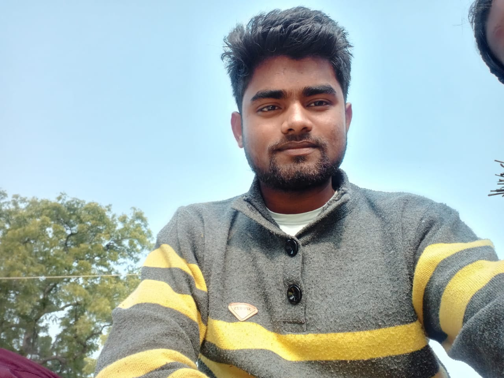

Aakash Yadav

Summary
Motivated and committed professional with a strong background in customer
service and administrative support, consistently delivering high-quality
results through dedication and hard work.
Acedmic Qualification
Year 2018
- I passed calss 10th from SMT AARTI DEVI UMV BASTI with 87% marks.
Year 2020
- I passed calss 12th from GRS INTER COLLEGE BASTI with 80% marks.
Year 2021-25
- I pursuing B.Tech Degree at IITK in stream of Civil Engineering and minor degree in Computer Science.
Scholastic Achievements
- I am selected in CONCOR SUPER- 30 VARANSI for prepration of jee entrance exam.
- I secure 8639 rank out of 0.14 million candidates in Joint Entrance Examination (JEE)-Advanced 2021.
Working Experience
IIT PAL
| Sathee Project | Prof. Amey Karkare, Dept. of CSE | NTA & Prutor@IITK
- Completed an 2-month internship program as a Teaching Assistant with Prutor from 07th Feb 2023 to 14 March 2023.
- Worked on the SATHEE Project, which is an initiative of NTA and IIT's to help students without coaching.
- Helped students with their learning and problem-solving techniques by providing hand-written and video solution.
- Developed a strong understanding of the education industry and gained insights into the latest trends and practices.
Key Projects
Python and its Common Uses
- Utilizing Command Line Interface and working with GitHub and Git for version control and collaborative development.
- Successfully deployed a website with functional front-end and implemented Django for efficient back-end server operations.
- Scrap the information of the Professor from the IIT Kanpur official website and make a dataset based on the collected data.
Front End Web Development Bootcamp
- Successfully completed an intensive Front End Web Development Bootcamp focusing on HTML, CSS, VS Code, Git/Github
(version control), Bootstrap (frontend library), JavaScript (using Node.js), functions, React.js (functional components, props,
and hooks), MaterialUI (predefined components for React.js), and Firebase (database and hosting).
- Demonstrated proficiency by building a comprehensive website that incorporated all the learned concepts.
- Achieved recognition as one of the top performers in the bootcamp, with rewards granted to the top 3 participants
Technical Skills
Programming Languages
- C
- C++
- Python
- HTML
- CSS
- JavaScript
Libraries/Utilities
- Numpy
- Pandas
- NodeJS
- ReactJS
Tolls
Relevant Courses
- Introduction to Electronics
- Applied Probability and Statistics
- Data Structure and Algorithm
- Linear Algebra & ODE
- Partial Differential Equation
- Wev development
- Machine learning
- Introduction to software Engineering
- Introductiono to Computer Graphics
Positions of Responsibility
Secretary
| Antragni IITK | 2022-23
- Successfully managed diverse administrative tasks for Mr. Mrs. Vertical, including scheduling, calls, and emails with precision
- Collaborated effectively with cross-functional teams at Antragni for seamless and streamlined task completion.
- Proactively coordinated with external vendors and sponsors for timely procurement of event equipment and supplies.
Extra Carricular Acitivities
- Foundation for Excellence having completed all the requirements of the program to develop the non-negative skills of Conscientiousness, Innovativeness, Taking Initiative, Perseverance and Problem Solving through a change of mindset.
- Conceptualized and organized the annual function for the school, including developing the theme, selecting the performances, and
creating a detailed plan for the event. Coordinated with various teams including performers, teachers, and event management.
- Demonstrated organizational skills in managing and overseeing the successful production of the event, including coordinating
rehearsals, coordinating sound and lighting, managing the event flow, and ensuring memorable and seamless guest experiences.
- Successfully completed a transformative Competitiveness Mindset school program that focused on developing and cultivating a
growth-oriented mindset that values competitiveness, resilience, continuous learning, adaptability, and innovation.
Others